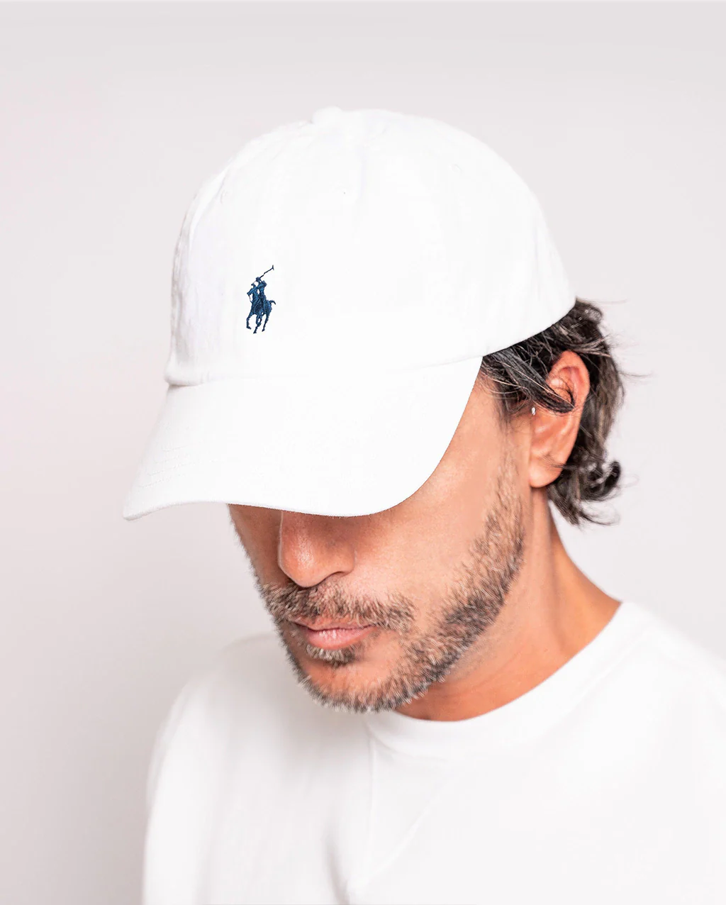
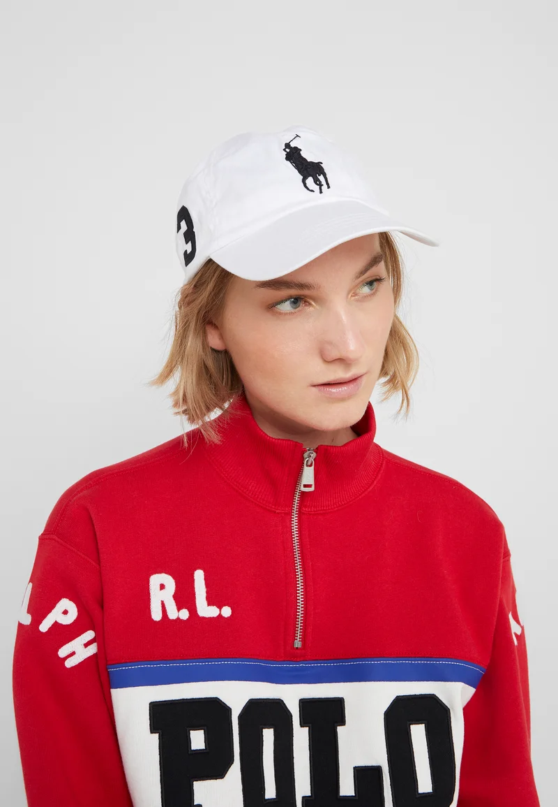

Gorra Polo Ralp Lauren
Esta gorra adquiere el icónico acabado Polo gracias al bordado del caballo marca de la casa, que se confecciona con 982 puntadas. La prenda se ha elaborado con sarga de algodón Better Cotton™ y presenta el logotipo y una correa con hebilla en la parte trasera.

